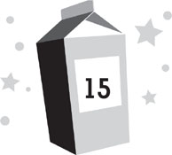

Lunar day 217
Possibly the last few minutes of my life
“Drive!” I yelled to Kira.
“I know!” she yelled back, planting her foot on the accelerator.
The rear wheels of the rover spun wildly, kicking up their own cloud of moon dust. For a few moments, I feared that we’d sunk into the surface and were stuck, but then finally, the treads caught and we lurched forward. My helmet clanged off the back of my seat hard enough to rattle my head around like a peanut in its shell. The emergency helmet repair kit nearly slid off my lap, but I snagged the handle at the last second and kept it from tumbling into the dust.
In our hurry to rescue everyone, we had forgotten to follow official moonwalk procedures and check for any potential clouds of meteorites in the area before heading onto the surface. Now there was nothing we could do except get to safety as fast as humanly possible.
Three more meteorites plugged the ground in front of us, sending up plumes of dust.
And those were merely the ones I could see. I had a limited range of vision in my helmet, which meant there were probably other rocks streaming in from outer space all around us.
There wasn’t any way to see the meteorites until they hit the ground. There was no atmosphere for them to spark off, and against the black sky the dark rocks were invisible. There was no sound as they hurtled downward. Every impact was eerily silent. We couldn’t even hear the motor on the rover. The only sound was our own frightened breathing, relayed through our radio headsets to one another.
A minute before, when Kira had been driving like a madwoman, I’d been worried that the rover was going too fast. Now it seemed terrifyingly slow. Meteorites were slamming into the surface around us at hundreds of miles an hour, and we were barely moving. The safety of the lava tube ahead didn’t seem to be getting any closer at all.
A new sound suddenly echoed in my helmet. My mother’s voice on the radio. “Dash! Kira! Are you out there?”
“Yes!” both of us shouted back at once.
Mom gave a gasp of concern. I’m sure she hadn’t meant for us to hear it, because when she spoke again, she was obviously doing her best to sound steady and reassuring. “Where are you?”
“We can see the lava tube,” I reported. “It’s about a hundred meters away.”
Several more meteorites streaked into the ground around us. There were too many to count now. The shower was growing in intensity.
“Get here as fast as you can,” Mom ordered. “We’ll be waiting by the air lock. Once you’re inside the tube itself, you’ll be safe.”
I looked to Kira helplessly.
“I’m going as fast as I can,” she told me, then jammed her foot on the accelerator again, showing me she had it down as far as it could go.
Everywhere around us, there were puffs of dust. They were rising from the plain where Moon Base Beta would be built, from the dunes in the distance, and in the road around us, disturbingly close by.
Kira kept her gaze focused straight ahead and her hands locked on the steering wheel, putting us on the most direct line toward safety. Every second counted.
The tube was getting closer, though our progress still seemed agonizingly slow. I locked my eyes on the dark slash of rock, willing it to come closer.
Suddenly a meteorite shot past me, so close I could feel it, and the right rear tire exploded. The rear axle dropped and plowed into the ground, spinning us off course. The rover leaped over a small ridge of rock and soared into the air.
On earth, we might have jumped a foot or two, but in the low gravity, the rover was airborne for a frighteningly long time.
“Hold on tight!” Kira screamed at me.
I was already doing this, clutching the chassis as hard as I could with my right hand while keeping my left arm locked around the emergency helmet repair kit.
Thankfully, we landed in a wide-open plain of dust, rather than on rock. The front of the rover plowed into the ground, kicking up a wave of dust that poured over us, turning the world blinding white. I was thrown forward from the impact, but my seat belt held, yanking me back hard into the seat. The emergency repair kit was torn from my grasp.
I’d closed my eyes to brace for the impact, and when I opened them again, I found myself plunged into darkness. For one brief, terrifying moment, I thought I might have gone blind, but then I realized that my visor had simply been covered in dust. I did my best to wipe it away, but it clung tenaciously, allowing me only a tiny smeared window to see through.
There was so much dust still flying around us, I could barely see my own feet. It was as though we’d been plunged into a snow dome and shaken. At first I thought Kira had been thrown free, but then I realized she was still in her seat beside me, only so coated with dust that she blended into the scenery.
“Are you okay?” I asked.
“Yes,” she answered. “You?”
“I’m good,” I said, hoping it was true. “Let’s move.”
Kira and I tried to unbuckle ourselves as quickly as we could. Unfortunately, the latch on my belt stayed stubbornly locked while I fumbled at it with my bulky gloved hands.
“What happened?” Mom asked over the radio.
“We wrecked the rover,” I said.
“A meteorite hit it!” Kira added quickly. “It wasn’t my fault!”
Unable to unlatch the buckle, I resorted to force, pounding on it angrily. It popped right open and I sprang from the rover.
A bizarrely calm computerized voice suddenly spoke in my ear. “Warning,” it said. “Your oxygen levels are down to twenty percent. Please search for safety immediately.” This was accompanied by a holographic display projected inside the visor, showing how low my oxygen levels were.
That seemed wrong. I hadn’t been out long enough to use eighty percent of my oxygen. But maybe, in my panic, I was sucking it down much faster than I needed to. I did my best to slow my breathing.
With the cloud of dust still drifting to the ground around us, it was impossible to tell where anything was. It was hard enough to see Kira, and she was only a few feet away. I grabbed her arm and staggered forward in the direction that I thought the lava tube should be. A few feet on, the cloud quickly dissipated and we were back under the clear dark sky. Between the fog inside my helmet and the dust outside it, it was still hard to see much of anything, but I managed to make out the tube ahead of us.
The meteorites were still coming down. If anything, they were coming down even faster.
I spotted the emergency repair kit, half-buried in the moon dust only a few feet away, and staggered toward it.
“No time for that!” Kira yelled.
I kept going for it anyhow. If we left the kit behind and it was destroyed, our rescue mission would be a failure. Besides, it was only a few seconds’ delay—although each second out there counted. I slipped my fingers under the handle and yanked it free of the dust.
“Dash! Run!” Kira yelled, as if maybe I hadn’t thought of this myself.
I did my best, but unfortunately, in addition to the standard difficulties of moving fast in low gravity, we had landed in a deep field of dust, which clung to our legs like quicksand, making our progress even more troublesome.
Everywhere I looked, clouds of dust were blooming around me. It felt like I was in one of Roddy’s virtual-reality war games, with the enemy attacking from everywhere at once, only I didn’t have anything to protect myself with, and should I get hit, I wouldn’t be able to press the reset button.
Plus, there was the whole inability-to-run thing. Our progress felt maddeningly slow, although we were actually moving. The safety of the tube was getting closer. But time seemed to be stretching out, every second feeling like hours.
An alarm sounded inside my helmet. “Red alert,” the computerized voice said. “Your oxygen levels are down to ten percent.” Once again, the holographic display was projected inside the visor. It was probably supposed to be helpful, but it was blocking what little view I had left.
Something was definitely wrong with my suit. I was losing oxygen way too fast. But I couldn’t take the time to breathe more slowly. Instead I kept doing my best to move fast, hoping there would be enough air left in my tank to get me to safety.
Kira stumbled beside me, but I took her arm and steadied her before she sprawled on the ground. A few steps later, she did the exact same thing for me.
“You’re almost here!” Mom called to us. “Hurry! Only a few steps more!”
Through the dust on my visor and the display informing me I was close to suffocation, I could barely make out the entrance of the lava tube just ahead: a subterranean ring of jagged rock leading into a twelve-foot-tall, pitch-black tunnel. The area around it had been excavated so that a slope of dust angled steeply down toward the opening. The other rover was parked near the top of the slope. We staggered past it.
A meteorite ricocheted off the mouth of the tube and zinged right between Kira and me, moving so fast it might as well have been a bullet. It missed both of us by inches.
We hit the dusty entry slope and stumbled. Slopes are difficult to negotiate in low gravity, even when you’re not running for your life. Kira and I both went down, tumbling through the dust toward the tube’s entrance. The world seemed to flip over me several times, and then I came to a hard, painful stop, facedown on the hard rock inside the tube. Kira was right beside me.
“Warning,” the computer in my helmet announced. “Oxygen levels are critically low. At current rate of respiration, you only have two minutes left.”
I pulled myself to my feet and found the air lock was only a few steps away. The operations pod was essentially an enormous white balloon that had been inflated inside the tube. It was millions of times sturdier than a real balloon, of course, but the concept was the same. It looked bizarrely out of place in the tube, like a massive sausage that was jammed in a dragon’s throat. The air lock sat at the end facing us. Dozens of moon-dust boot prints led along the rocky floor to it.
I hooked my hand beneath Kira’s arm, hauled her to her feet, and helped her toward the air lock.
“We’re here,” I announced.
“I see you,” Mom said, with obvious relief in her voice.
She must have flipped the switch to open the air lock automatically for us, because the door swung out as we approached. We clambered through the hole and locked the door tight behind us.
“Only one minute of oxygen remaining,” the computer told me. “Hypoxia is imminent. Get to safety as quickly as possible.”
Inside the air lock, a message flashed on a panel: PRESSURIZATION IN PROGRESS.
A rush of air buffeted my suit. As the atmosphere in the air lock changed to that of earth, we could immediately hear sounds around us: the murmur of worried voices inside the operations pod, the hum of machinery, the computerized voice—now coming from outside my helmet—announcing, “Pressurization complete. It is now safe to remove your helmet.”
At the exact same time, the same voice inside my helmet was saying, “Thirty seconds of oxygen remaining. If you do not reach safety immediately, you will black out and possibly die.”
I yanked my gloves off, unlatched my helmet, detached it from my suit, and gulped in air.
Beside me, Kira yanked off her helmet as well, then gave me a weak smile. “Guess we made it.”
“Yeah,” I agreed. “We did.”
We both turned to the inner air lock door, which was glass. We could see our parents gathered around it with Chang, making no attempt to hide their relief that we were alive. Even Dr. Howard was giving us his full attention for once.
“The air jets here don’t have enough power to clean all that dust off those suits,” Dad told us through the door. “You’ll have to remove them in the air lock and leave them there. We can’t have you tracking all that dust in here.”
“All right,” I said, and finally noticed how much dust was caking my suit. I looked like I’d been dipped in flour. Kira looked even worse. Every time she moved, cascades of dust poured from every crevice of her suit.
The two of us quickly helped each other unlatch our suits and climb out of them. Kira shrugged off hers first, then I did mine.
Kira’s face suddenly went somewhat pale, like she’d had a terrible shock. When she realized I’d noticed, she tried to hide it, but it was too late.
“What’s wrong?” I asked.
“This.” Kira pointed to a gash in the right shoulder of my suit.
A meteorite had torn through almost every layer of it. And given the tear’s location, it had come awfully close to my head as well. That explained my oxygen loss; it must have leaked out through the last remaining layer. I figured the tear was from the meteorite I’d felt pass, the one that had blown our tire and upended the rover. Though it didn’t really matter when it had happened. The fact was, only one final membrane of fabric had remained between me and instant death. If the meteorite had been a millimeter to the left—or if I had been leaning a millimeter to the right—or if I’d torn the suit while hurrying to safety—I wouldn’t have been standing there. I’d have been dead out on the surface instead.
The mere thought of it made me weak in the knees. My legs buckled and Kira had to steady me.
The inner air lock door popped open. My parents rushed through to my side. I don’t know if they’d seen the gash in the suit as well, or if they simply had decided they couldn’t wait anymore for me. Dr. Howard came through right behind them.
My folks hugged me while I stood there, the suit still piled on the floor around my ankles. Beside me, Dr. Howard clutched Kira tightly.
“We thought you might have . . . ,” Mom began, but couldn’t bring herself to finish the statement. “In our hurry to get you here, no one thought to check and see if any meteorites were in the area.”
“We’re so sorry,” Dad said.
“It’s okay,” I told them.
“It’s not,” Mom replied. “We almost lost you two out there.”
I did my best not to think too much about that statement. Instead I said, “Remember how, for the first few months after we got here, I used to complain how boring it was on the moon?”
“Yes,” Dad answered.
“I really miss those days,” I said, and then collapsed in his arms.